本篇文章主要介绍了Kubernetes中RBAC权限控制使用。
RBAC简介
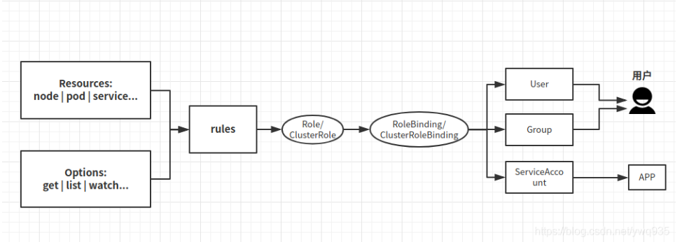
- RBAC（Role-Based Access Control）
基于角色的权限控制。通过角色关联用户、角色关联权限的方式间接赋予用户权限。
在 Kubernetes 中，RBAC 是通过 rbac.authorization.k8s.io API Group 实现的，即允许集群管理员通过 Kubernetes API 动态配置策略。
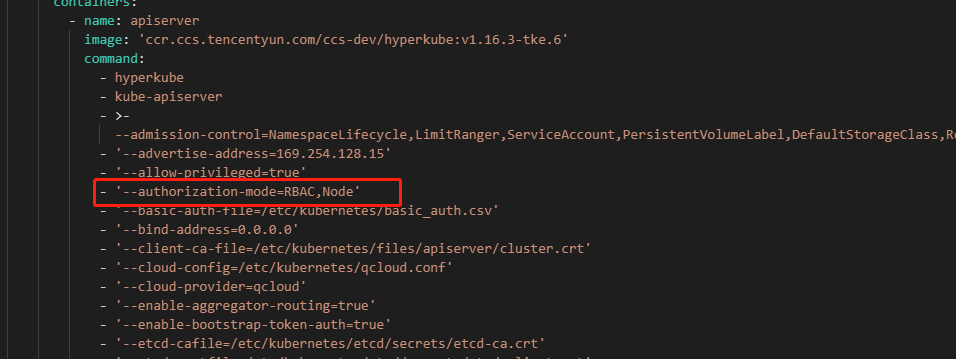
Role
用于定义某个命名空间的角色的权限。ClusterRole
用于定义整个集群的角色的权限。RoleBinding
将角色中定义的权限赋予一个或者一组用户，针对命名空间执行授权。ClusterRoleBinding
将角色中定义的权限赋予一个或者一组用户，针对集群范围内的命名空间执行授权。
在 RBAC API 中，一个角色包含一组相关权限的规则。权限是纯粹累加的（不存在拒绝某操作的规则）。 角色可以用 Role 来定义到某个命名空间上， 或者用 ClusterRole 来定义到整个集群作用域。
Role
对某个类型资源的权限分配
一个Role只可以用来对某一命名空间中的资源赋予访问权限。 下面的Role示例定义到名称为 “default” 的命名空间，可以用来授予对该命名空间中的 Pods 的读取权限：
1 | apiVersion: rbac.authorization.k8s.io/v1 |
获取某个资源的子资源
“pods” 是有命名空间的资源，而 “log” 是 pods 的子资源。在 RBAC 角色中， 使用”/“分隔资源和子资源。允许一个主体要同时读取 pods 和 pod logs
1 | apiVersion: rbac.authorization.k8s.io/v1 |
配置某一个具体资源的权限
可以通过resourceNames列表按名称引用资源。 在指定时，可以将请求类型限制资源的单个实例。限制只可以 “get” 和 “update” 的单一configmap，你可以这么写：
1 | apiVersion: rbac.authorization.k8s.io/v1 |
Role常用资源权限配置示例
在以下示例中，我们仅截取展示了 rules 对应部分， 允许读取在核心 API 组下的 Pods:
rules:
1 | - apiGroups: [""] |
允许读/写在 “extensions” 和 “apps” API 组中的 “deployments” 资源：
1 | rules: |
允许读取 “pods” 和读/写 “jobs” :
1 | rules: |
允许读取名称为 “my-config”的 ConfigMap （需要通过 RoleBinding 绑定带某名字空间中特定的 ConfigMap）：
1 | rules: |
允许读取在核心组中的 “nodes” 资源（因为 Node 是集群范围的，所以需要 ClusterRole 绑定到 ClusterRoleBinding 才生效）
1 | rules: |
允许在非资源端点 “/healthz” 和其子路径上发起 “GET” 和 “POST” 请求（必须在 ClusterRole 绑定 ClusterRoleBinding 才生效）
1 | rules: |
RoleBinding
RoleBinding绑定Role
角色绑定（RoleBinding）是将角色中定义的权限赋予一个或者一组用户。 它包含若干主体（用户，组和服务账户）的列表和对这些主体所获得的角色的引用。 可以使用 RoleBinding 在指定的命名空间中执行授权， 或者在集群范围的命名空间使用 ClusterRoleBinding 来执行授权。
一个 RoleBinding 可以引用同一的命名空间中的 Role 。 下面的例子 RoleBinding 将 “pod-reader” 角色授予在 “default” 命名空间中的用户 “jane”； 这样，用户 “jane” 就具有了读取 “default” 命名空间中 pods 的权限。
roleRef 里的内容决定了实际创建绑定的方法。kind 可以是 Role 或 ClusterRole， name 将引用你要指定的 Role 或 ClusterRole 的名称。在下面的例子中，角色绑定使用 roleRef 将用户 “jane” 绑定到前文创建的角色 Role，其名称是 pod-reader。
1 | apiVersion: rbac.authorization.k8s.io/v1 |
RoleBinding绑定ClusterRole
RoleBinding 也可以引用 ClusterRole，对 ClusterRole 所定义的、位于 RoleBinding 命名空间内的资源授权。 这可以允许管理者在 整个集群中定义一组通用的角色，然后在多个命名空间中重用它们。
例如下面的例子，RoleBinding 指定的是 ClusterRole， “dave” （主体，区分大小写）将只可以读取在”development” 命名空间（ RoleBinding 的命名空间）中的”secrets”。
1 | apiVersion: rbac.authorization.k8s.io/v1 |
ClusterRole
CluserRole示例
ClusterRole 可以授予的权限和 Role 相同， 但是因为 ClusterRole 属于集群范围，所以它也可以授予以下访问权限：
- 集群范围资源 （比如 nodes）
- 非资源端点（比如 “/healthz”）
- 跨命名空间访问的有名字空间作用域的资源（如 Pods），比如运行命令kubectl get pods —all-namespaces 时需要此能力
下面的 ClusterRole 示例可用来对某特定命名空间下的 Secrets 的读取操作授权， 或者跨所有命名空间执行授权（取决于它是如何绑定的）:
1 | apiVersion: rbac.authorization.k8s.io/v1 |
aggregationRule聚合ClusteRole
从 1.9 开始，集群角色（ClusterRole）可以通过使用aggregationRule的方式并组合其他 ClusterRoles 来创建。 聚合集群角色的权限是由控制器管理的，方法是通过过滤与标签选择器匹配的 ClusterRules，并将其中的权限进行组合
下面是通过创建一个新的、标签同样为rbac.example.com/aggregate-to-monitoring: true的 ClusterRole，新的规则可被添加到 “monitoring” 集群角色中。
1 | apiVersion: rbac.authorization.k8s.io/v1 |
1 | apiVersion: rbac.authorization.k8s.io/v1 |
ClusterRoleBinding
ClusterRoleBinding绑定某个组
ClusterRoleBinding可用来在集群级别或对所有命名空间执行授权。 下面的例子允许 “manager” 组中的任何用户读取任意命名空间中 “secrets”。
1 | apiVersion: rbac.authorization.k8s.io/v1 |
Kubernetes中的用户和组
RoleBinding 或者 ClusterRoleBinding 需要绑定角色到 主体。 主体可以是组，用户或者服务账户。
用户是由字符串表示，它们可以是普通的用户名，像 “alice”，或者是 邮件格式 “bob@example.com”，或者是数字ID。由 Kubernetes 管理员配置身份认证模块 需要的格式。RBAC 鉴权系统不对格式作任何要求，但是前缀 system: 是 Kubernetes 系统保留的， 所以管理员要确保配置的用户名不能出现上述前缀格式。
用户组信息是 Kubernetes 现在提供的一种身份验证模块，与用户一样，对组的字符串没有格式要求， 只是不能使用保留的前缀 system: 。
K8S中有两种用户(User)
- 服务账号(ServiceAccount)
- 普通用户(User)
ServiceAccount是由K8S管理的，而User通常是在外部管理.
serviceaccount绑定
- 为特定应用的服务账户授予角色（最佳实践）
这要求应用在其 pod 规范中指定 serviceAccountName ， 并额外创建服务账号（包括通过 API、应用程序清单、kubectl create serviceaccount 等）。
例如，在命名空间 “my-namespace” 中授予服务账号 “my-sa” 只读权限：
1 | kubectl create rolebinding my-sa-view \ |
- 将角色授予某命名空间中的 ”default” 服务账号
如果一个应用没有指定 serviceAccountName，那么它将使用 “default” 服务账号。
说明： 不指定 serviceAccountName 的话， “default” 服务账号的权限会授予给命名空间中所有未指定 serviceAccountName 的 Pods。
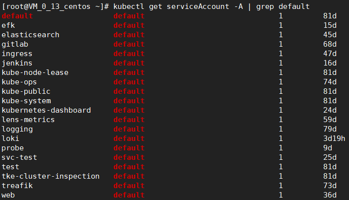
例如，在命名空间 “my-namespace” 中授予服务账号 “default” 只读权限：
1 | kubectl create rolebinding default-view \ |
- 许多附加组件 add-ons 目前在 kube-system 命名空间以 “default” 服务账号运行。 要允许这些附加组件以超级用户权限运行，需要将集群的 cluster-admin 权限授予 kube-system 命名空间中的 “default” 服务账号。
说明： 启用这一配置意味着在 kube-system 命名空间中包含以超级用户账号来访问 API 的 Secrets。
1 | kubectl create clusterrolebinding add-on-cluster-admin \ |
- 将角色授予命名空间中所有的服务账号
如果你想要在命名空间中所有的应用都具有某角色，无论它们使用的什么服务账号， 你可以将角色授予该命名空间的服务账号组。
例如，在命名空间 “my-namespace” 中的只读权限授予该命名空间中的所有服务账号：
1 | kubectl create rolebinding serviceaccounts-view \ |
- 对集群范围内的所有服务账户授予一个受限角色（不鼓励）
如果你不想管理每一个命名空间的权限，你可以向所有的服务账号授予集群范围的角色。
例如，为集群范围的所有服务账号授予跨所有命名空间的只读权限：
1 | kubectl create clusterrolebinding serviceaccounts-view \ |
- 授予超级用户访问权限给集群范围内的所有服务帐户（强烈不鼓励）
如果你不关心如何区分权限，你可以将超级用户访问权限授予所有服务账号。
警告：这将允许所有能够读取 Secrets 和创建 Pods 的用户访问超级用户的私密信息。
1 | kubectl create clusterrolebinding serviceaccounts-cluster-admin \ |
绑定用户和组示例
下面的示例只是展示 RoleBinding 中 subjects 的部分。
用户的名称为 “alice@example.com”:
1 | subjects: |
组的名称为 “frontend-admins”:
1 | subjects: |
服务账号在 kube-system 命名空间中:
1 | subjects: |
在名称为 “qa” 命名空间中所有的服务账号:
1 | subjects: |
所有的服务账号:
1 | subjects: |
所有认证过的用户 （版本 1.5+）:
1 | subjects: |
所有未认证的用户 （版本 1.5+）:
1 | subjects: |
所有用户 （版本 1.5+）:
1 | subjects: |
k8s系统默认的Roles和RoleBindings
API servers创建一组默认为 ClusterRole 和 ClusterRoleBinding 的对象。 其中许多是以 system: 为前缀的，它表示资源是基础设施 “owned” 的。对于这些资源的修改可能导致集群功能失效。 例如，system:node 是集群角色，它是定义 kubelets 相关的权限，如果这个角色被修改，它将导致 kubelets 无法正常工作。
所有默认的 ClusterRole 和 ClusterRoleBinding 对象都会被标记为 kubernetes.io/bootstrapping=rbac-defaults
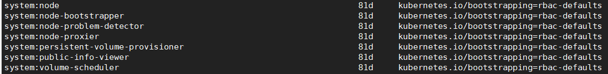
默认ClusterRole自动更新
在每次启动时，API Server 都会更新默认 ClusterRole 所缺少的各种权限，并更新默认 ClusterRoleBinding 所缺少的各个角色绑定主体。 这种自动更新机制允许集群去修复一些特殊的修改。 由于权限和角色绑定主体在新的 Kubernetes 版本中可能发生变化，所以这样的话也能够保证角色和角色绑定始终保持是最新的。
如果要禁止此功能,请将默认ClusterRole以及ClusterRoleBinding的rbac.authorization.kubernetes.io/autoupdate设置成false。
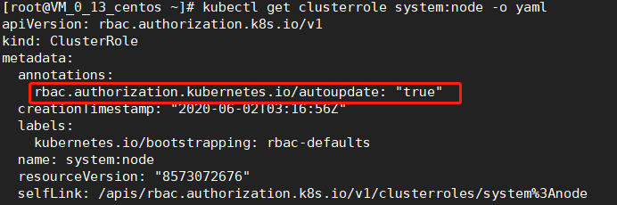
注意，缺乏默认权限和角色绑定主体可能会导致非功能性集群问题。
自动更新功能在 Kubernetes 版本1.6+ 的 RBAC 认证是默认开启的。
Discovery Roles
无论是经过身份验证的还是未经过身份验证的用户，默认角色的用户读取API被认为是安全的，可以公开访问（包括CustomResourceDefinitions）， 如果要禁用匿名未经过身份验证的用户访问，请在 API server 中添加 —anonymous-auth=false 的配置选项。
通过运行命令 kubectl 可以查看这些角色的配置信息:
1 | kubectl get clusterroles system:discovery -o yaml |
注意：不建议编辑这个角色，因为更改将在 API server 重启时自动更新时覆盖（见上文）
| 默认 ClusterRole | 默认 ClusterRoleBinding | 描述 |
|---|---|---|
| system:basic-user | system:authenticated 组 | 允许用户以只读的方式去访问他们自己的基本信息。在1.14版本之前，这个角色在默认情况下也绑定在 system:unauthenticated 上。 |
| system:discovery | system:authenticated 组 | 允许以只读方式访问 API 发现端点，这些端点用来发现和协商 API 级别。在1.14版本之前，这个角色在默认情况下绑定在 system:unauthenticated 上。 |
| system:public-info-viewer | system:authenticated 和 system:unauthenticated 组 | 允许对集群的非敏感信息进行只读访问，它是在1.14版本中引入的。 |
面向用户的角色
一些默认的角色不是前缀 system: 开头的。这些是面向用户的角色。它们包括 super-user 角色（cluster-admin）， 使用 ClusterRoleBindings （cluster-status）在集群范围内授予角色， 以及使用 RoleBindings （admin, edit, view）在特定命名空间中授予的角色。
在 1.9 开始，面向用户的角色使用ClusterRole Aggregation允许管理员在包含这些角色上的 自定义资源上添加规则。如果想要添加 “admin” “edit” 或者 “view” ，需要先创建使用以下一个或多个的 ClusterRole 的标签：
1 | metadata: |
| 默认 ClusterRole | 默认 ClusterRoleBinding | 描述 |
|---|---|---|
| cluster-admin | system:masters 组 | 允许超级用户在平台上的任何资源的所有操作。 当在 ClusterRoleBinding 中使用时，可以授权对集群中以及所有命名空间中的全部资源进行完全控制。 当在 RoleBinding 中使用时，可以授权控制 RoleBinding 所在命名空间中的所有资源，包括命名空间本身。 |
| admin | 无 | 允许管理员访问权限，旨在使用 RoleBinding 在命名空间内执行授权。 如果在 RoleBinding 中使用，则可授予对命名空间中的大多数资源的读/写权限， 包括创建角色和绑定角色（RoleBinding）的能力。 但是它不允许对资源配额或者命名空间本身进行写操作。 |
| edit | 无 | 允许对命名空间的大多数对象进行读/写操作。 它不允许查看或者修改角色（Roles）或者角色绑定（RoleBindings）。 |
| view | 无 | 允许对命名空间的大多数对象有只读权限。 它不允许查看角色（Roles）或角色绑定（RoleBindings）。 它不允许查看 Secrets，因为这类操作属于越权。 |
核心组件角色
| 默认 ClusterRole | 默认 ClusterRoleBinding | 描述 |
|---|---|---|
| system:kube-scheduler | system:kube-scheduler 用户 | 允许访问 kube-scheduler 组件所需要的资源。 |
| system:volume-scheduler | system:kube-scheduler 用户 | 允许访问 kube-scheduler 组件所需要的的卷资源。 |
| system:kube-controller-manager | system:kube-controller-manager 用户 | 允许访问 kube-controller-manager 组件所需要的资源。 各个控制环所需要的权限包含在 controller roles 之中。 |
| system:node | 在版本1.8之后无 | 允许访问 kubelet 组件所需要的资源，它包括读取所有的 Secrets 和对所有 Pod 状态对象的写操作。从版本 1.7 开始，推荐使用 Node authorizer 和 NodeRestriction 准入插件 来代替这个角色，它允许基于 kubelet 上调度执行的 Pods 来授权对 kubelet API 的访问。 在版本 1.7 之前，这个角色会自动绑定到 system:nodes 组。 在版本 1.7中，如果未启用Node 鉴权模式，这个角色将自动绑定到 system:nodes 组 在版本 1.8+ 之后，不再自动创建绑定。 |
| system:node-proxier | system:kube-proxy 用户 | 允许访问 kube-proxy 组件所需要的资源。 |
其他组件角色
| 默认 ClusterRole | 默认 ClusterRoleBinding | 描述 |
|---|---|---|
| system:auth-delegator | 无 | 允许代理身份认证和鉴权， 它通常用在插件式 API 服务器上，以实现统一的身份认证和鉴权。 |
| system:heapster | 无 | 为 Heapster 组件定义的角色。 |
| system:kube-aggregator | 无 | 为 kube-aggregator 组件定义的角色。 |
| system:kube-dns | 在kube-system命名空间中的kube-dns服务账号 | 为 kube-dns 组件定义的角色。 |
| system:kubelet-api-admin | 无 | 允许完全访问 kubelet API 。 |
| system:node-bootstrapper | 无 | 允许访问执行 Kubelet TLS 启动引导 所需要的资源。 |
| system:node-problem-detector | 无 | 为 node-problem-detector 组件定义的角色。 |
| system:persistent-volume-provisioner | 无 | 允许访问大部分的 动态卷驱动 所需要的资源。 |
控制器角色
Kubernetes 控制器管理器 运行核心控制环。 当使用 —use-service-account-credentials 参数时, 每个控制环使用一个单独的服务账号启动。 每个控制环都有相应的、前缀为 system:controller: 的角色。 如果控制管理器启动时未设置 —use-service-account-credentials， 它使用自己的身份信息来运行所有的控制环，该身份必须被授予所有相关的角色。 这些角色包括:
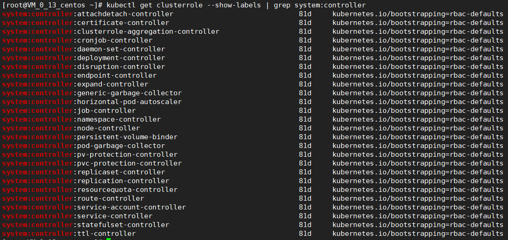
1 | system:controller:attachdetach-controller |
初始化第一个角色和角色绑定
授予他们一个角色，允许他们根据需要创建/更新RoleBinding或者ClusterRoleBinding对象。
授予他们绑定特定角色所需的权限: 隐式地，通过给他们授予角色中包含的权限。 显式地，通过允许他们对特定角色（或集群角色）执行bind操作的权限
1 | apiVersion: rbac.authorization.k8s.io/v1 |
当初始化第一个角色和角色绑定时，需要为初始用户授予他们尚未拥有的权限。 对初始角色和角色绑定进行初始化时需要：
使用用户组为 system:masters 的凭据，该用户组由默认绑定关联到 cluster-admin 这个超级用户角色。
如果你的 API server 启动时启用了不安全端口（使用—insecure-port）, 你也可以通过该端口调用 API ，这样操作会绕过身份验证或鉴权。
RBAC常用的命令
kubectl create role
创建 Role 对象，定义在某命名空间中的权限。例如:
- 创建名称为 “pod-reader” 的 Role 对象，允许用户对 pods 执行 “get”、”watch” 和 “list” 操作：
1 | kubectl create role pod-reader --verb=get --verb=list --verb=watch --resource=pods |
- 创建名称为 “pod-reader” 的 Role 对象并指定 resourceNames：
1 | kubectl create role pod-reader --verb=get --resource=pods --resource-name=readablepod --resource-name=anotherpod |
- 创建名为 “foo” 的 Role 对象并指定 apiGroups:
1 | kubectl create role foo --verb=get,list,watch --resource=replicasets.apps |
- 创建名为 “foo” 的 Role 对象并指定子资源权限:
1 | kubectl create role foo --verb=get,list,watch --resource=pods,pods/status |
- 创建名为 “my-component-lease-holder” 的 Role 对象，使其具有对特定名称资源执行 get/update 的权限：
1 | kubectl create role my-component-lease-holder --verb=get,list,watch,update --resource=lease --resource-name=my-component |
kubectl create clusterrole
创建 ClusterRole 对象。例如：
- 创建名称为 “pod-reader” 的 ClusterRole 对象，允许用户对 pods 对象执行 “get”、”watch” 和 “list” 操作：
1 | kubectl create clusterrole pod-reader --verb=get,list,watch --resource=pods |
- 创建名为 “pod-reader” 的 ClusterRole 对象并指定资源名称：
1 | kubectl create clusterrole pod-reader --verb=get --resource=pods --resource-name=readablepod --resource-name=anotherpod |
- 创建名为 “foo” 的 ClusterRole 对象并指定 apiGroups：
1 | kubectl create clusterrole foo --verb=get,list,watch --resource=replicasets.apps |
- 创建名为 “foo” 的ClusterRole 对象并指定子资源:
1 | kubectl create clusterrole foo --verb=get,list,watch --resource=pods,pods/status |
- 创建名为 “foo” 的 ClusterRole 对象并指定非资源路径：
1 | kubectl create clusterrole "foo" --verb=get --non-resource-url=/logs/* |
- 创建名为 “monitoring” 的 ClusterRole 对象并指定聚合规则：
1 | kubectl create clusterrole monitoring --aggregation-rule="rbac.example.com/aggregate-to-monitoring=true" |
kubectl create rolebinding
在特定的命名空间中对 Role 或 ClusterRole 授权。例如：
- 在命名空间 “acme” 中，将名为 admin 的 ClusterRole 中的权限授予名称 “bob” 的用户:
1 | kubectl create rolebinding bob-admin-binding --clusterrole=admin --user=bob --namespace=acme |
- 在命名空间 “acme”中，将名为 view 的 ClusterRole 中的权限授予该命名空间 “acme” 中名为 “myapp” 的服务账号：
1 | kubectl create rolebinding myapp-view-binding --clusterrole=view --serviceaccount=acme:myapp --namespace=acme |
- 在命名空间 “acme” 中，将名为 view 的 ClusterRole 对象中的权限授予命名空间 “myappnamespace” 中名称为 “myapp” 的服务账号：
1 | kubectl create rolebinding myappnamespace-myapp-view-binding --clusterrole=view --serviceaccount=myappnamespace:myapp --namespace=acme |
kubectl create clusterrolebinding
在整个集群、包括所有的命名空间中对 ClusterRole 授权。例如：
- 在整个集群范围，将名为 cluster-admin 的 ClusterRole 中定义的权限授予名为 “root” 用户：
1 | kubectl create clusterrolebinding root-cluster-admin-binding --clusterrole=cluster-admin --user=root |
- 在整个集群范围，将名为 system:node-proxier 的 ClusterRole 的权限授予名为 “system:kube-proxy” 的用户：
1 | kubectl create clusterrolebinding kube-proxy-binding --clusterrole=system:node-proxier --user=system:kube-proxy |
- 在整个集群范围，将名为 view 的 ClusterRole 对象中定义的权限授予 “acme” 命名空间中名为 “myapp” 的服务账号：
1 | kubectl create clusterrolebinding myapp-view-binding --clusterrole=view --serviceaccount=acme:myapp |
kubectl auth reconcile
使用清单文件来创建或者更新 rbac.authorization.k8s.io/v1 API 对象。
尚不存在的对象会被创建，如果对应的命名空间也不存在，必要的话也会被创建。 已经存在的角色会被更新，使之包含输入对象中所给的权限。如果指定了 —remove-extra-permissions，可以删除其余权限。
已经存在的绑定也会被更新，使之包含输入对象中所给的主体。如果指定了 —remove-extra-permissions，则可以删除其余主体。
例如:
- 测试应用 RBAC 对象的清单文件，显示将要进行的更改：
1 | kubectl auth reconcile -f my-rbac-rules.yaml --dry-run |
- 应用 RBAC 对象的清单文件， 保留角色中的其余权限和绑定中的其他主体：
1 | kubectl auth reconcile -f my-rbac-rules.yaml |
- 应用 RBAC 对象的清单文件, 删除角色中的其他权限和绑定中的其他主体：
1 | kubectl auth reconcile -f my-rbac-rules.yaml --remove-extra-subjects --remove-extra-permissions |
查看 CLI 帮助获取详细的用法。
RBAC使用注意事项
角色和角色绑定的更新
你不能修改绑定对象所引用的 Role 或 ClusterRole 。 试图改变绑定对象的 roleRef 将导致验证错误。想要 改变现有绑定对象中 roleRef 字段的内容，必须删除并 重新创建绑定对象。这种限制有两个主要原因：
关于不同角色的绑定是完全不一样的。更改 roleRef 需要删除/重建绑定，确保要赋予绑定的完整主体列表是新 的角色（而不是只是启用修改 roleRef 在不验证所有现有 主体的情况下的，应该授予新角色对应的权限）。
使得 roleRef 不可以改变现有绑定主体用户的 update 权限， 这样可以让它们能够管理主体列表，而不能更改授予这些主体相关 的角色。
命令kubectl auth reconcile可以创建或者更新包含 RBAC 对象的清单文件， 并且在必要的情况下删除和重新创建绑定对象，以改变所引用的角色
RBAC在TKE中的应用
简介
TKE 提供了对接 Kubernetes RBAC 的授权模式，便于对子账号进行细粒度的访问权限控制。该授权模式下，可通过容器服务控制台及 kubectl 两种方式进行集群内资源访问。如下图所示：
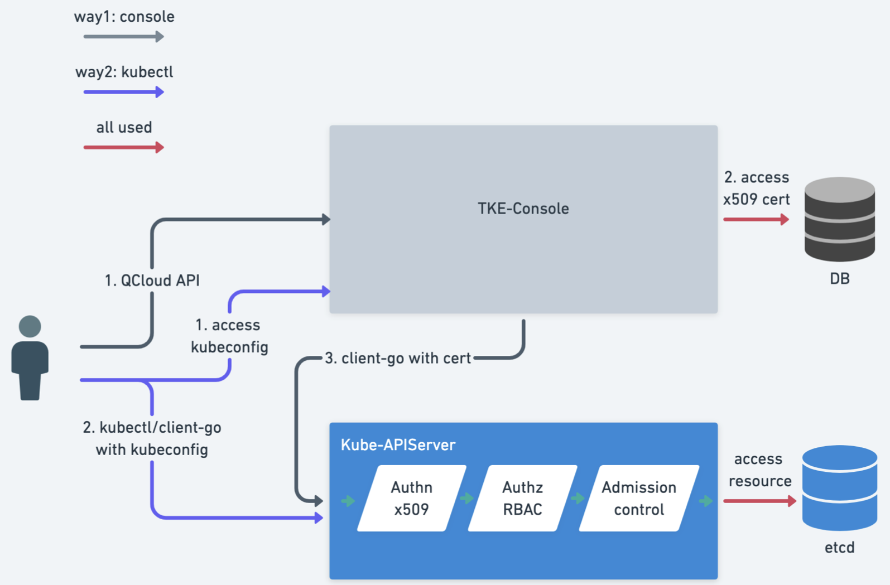
TKE Kubernetes 对象级别权限控制方案
Kubernetes APIServer 支持丰富多样的认证策略，例如 x509 证书、bearer token、basic auth。其中，仅 bearer token 单个认证策略支持指定 known-token csv 文件的 beaer token、serviceaccount token、OIDC token、webhook token server 等多种 token 认证方式。
TKE 分析了实现复杂性及多种场景等因素，选择使用 x509 证书认证方式。其优势如下：
- 用户理解成本低。
- 对于存量集群无需进行复杂变更 。
- 按照 User 及 Group 进行划分，后续扩展性好。
TKE 基于 x509 证书认证实现了以下功能：
- 每个子账号单独具备客户端证书，用于访问 Kubernetes APIServer。
- 当子账号在控制台访问 Kubernetes 资源时，后台默认使用该子账号的客户端证书去访问用户 Kubernetes APIServer。
- 支持子账号更新独有的客户端证书，防止凭证泄露。
- 支持主账号或使用集群 tke:admin 权限的账号进行查看、更新其他子账号的证书。
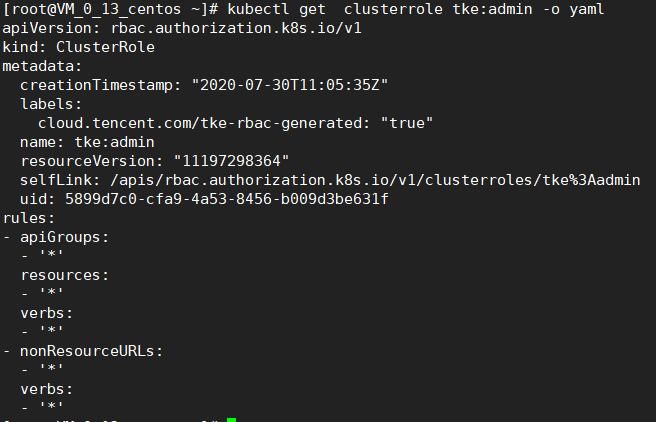
存量集群授权模式升级操作
对于存量的集群，如果开启RBAC模式，那么会给腾讯云下的所有账号创建一个clusterrolebinding，并且会绑定tke:admin这个clusterole，所以如果你是存量集群，如果需要回收某些子账号的权限，那么需要自己手动操作收回权限，否则默认所有子账号都有admin权限
升级授权模式
若使用旧授权模式的集群需要升级时，请参考以下操作步骤进行升级：
- 登录容器服务控制台，选择左侧导航栏中的【集群】。
- 在“集群管理”页面中，选择需升级的集群 ID。
- 在集群详情页面中，选择左侧【授权管理】>【ClusterRole】。
- 在 “ClusterRole” 管理页面中，单击【RBAC策略生成器】。
- 在弹出的“切换权限管理模式”窗口中，单击【切换权限管理模式】即可进行授权模式升级。如下图所示：
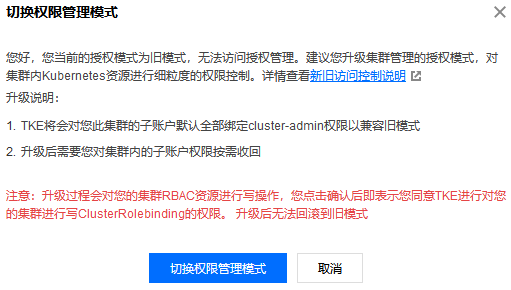
为确保新旧模式的兼容性，升级过程中会进行如下操作：
- 创建默认预设管理员 ClusterRole：tke:admin。
- 拉取子账号列表。
- 为每个子账号生成可用于 Kubernetes APIServer 认证的 x509 客户端证书。
- 为每个子账号都绑定 tke:admin 角色（确保和存量功能兼容）。
- 升级完毕。
回收子账号权限
集群授权模式升级完毕后，集群管理员（通常为主账号管理员或创建集群的运维人员）可按需对具有该集群权限的子账号进行权限回收操作，步骤如下：
- 选择集群【授权管理】下的菜单项，在对应的管理页面中单击【RBAC策略生成器】。
- 在“管理权限”页面的“选择子账号”步骤中，勾选需回收权限的子账号并单击【下一步】。如下图所示：
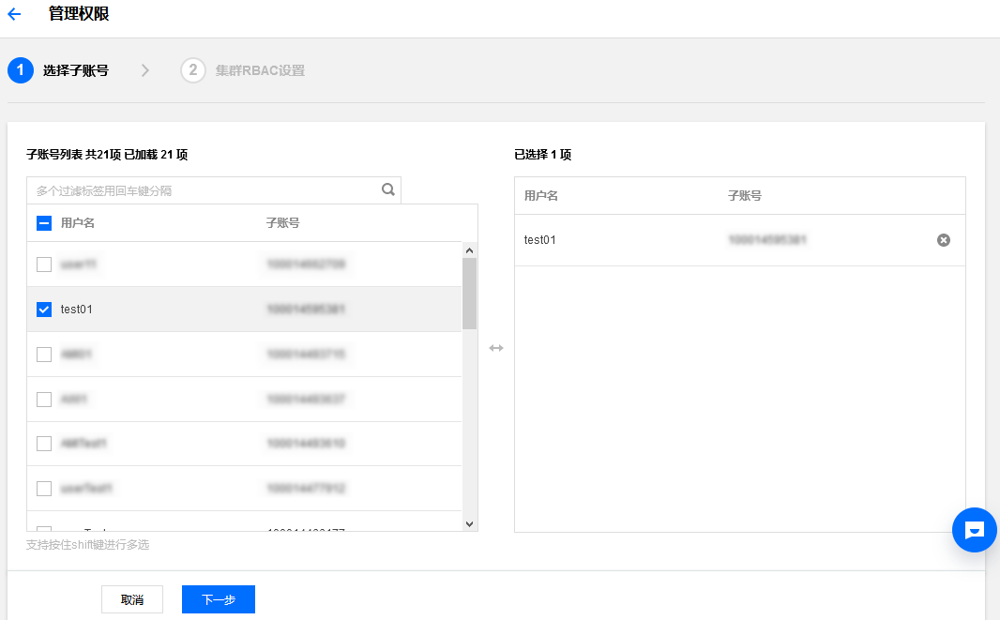
- 在“集群RBAC”步骤中，设置权限。例如，“权限设置”选择为命名空间 “default” 下的“只读用户”。如下图所示：
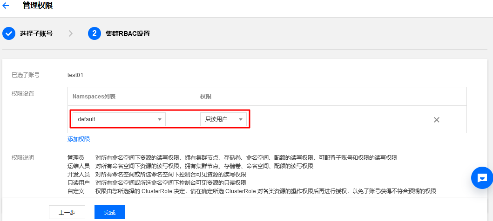
单击【完成】即可完成回收操作。
确认子账号权限
当完成子账号回收操作后，您可通过以下步骤进行确认：
- 选择左侧的【授权管理】>【ClusterRoleBinding】，进入 “ClusterRoleBinding” 管理页面。
- 选择被回收权限的子账号名称，进入 YAML 文档页面。子账号默认为 tke:admin 权限，回收对应权限后，可在 YAML 文件中查看变更。如下图所示：
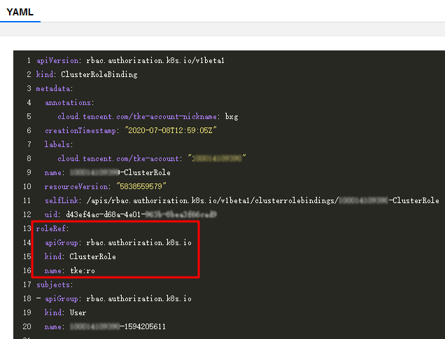
新建集群身份权限预设
容器服务控制台提供授权管理页，默认主账号及集群创建者具备管理员权限。可对其他拥有该集群 DescribeCluster Action 权限的子账号进行权限管理。如下图所示：
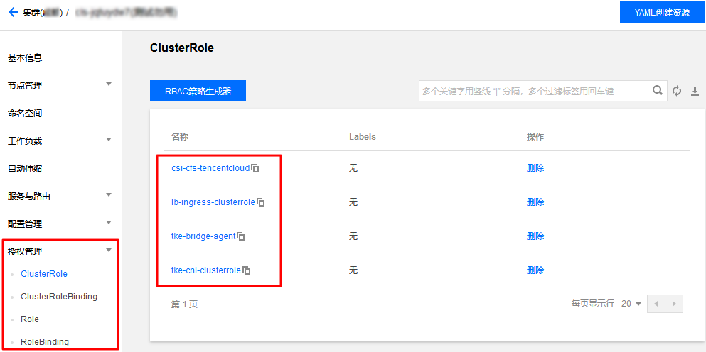
ClusterRole 说明
所有命名空间维度：
- 管理员（tke:admin）：对所有命名空间下资源的读写权限，具备集群节点、存储卷、命名空间、配额的读写权限，可配置子账号的读写权限。
- 运维人员（tke:ops）：对所有命名空间下控制台可见资源的读写权限，具备集群节点、存储卷、命名空间、配额的读写权限。
- 开发人员（tke:dev）：对所有命名空间下控制台可见资源的读写权限。
- 受限人员（tke:ro）：对所有命名空间下控制台可见资源的只读权限。
- 自定义：用户自定义 ClusterRole。
指定命名空间维度：
- 开发人员（tke:ns:dev）： 对所选命名空间下控制台可见资源的读写权限， 需要选择指定命名空间。
- 只读用户（tke:ns:ro）：对所选命名空间下控制台可见资源的只读权限， 需要选择指定命名空间。
所有预设的 ClusterRole 都将带有固定 label：cloud.tencent.com/tke-rbac-generated: “true”。
所有预设的 ClusterRoleBinding 都带有固定的 annotations：cloud.tencent.com/tke-account-nickname: yournickname 及 label：cloud.tencent.com/tke-account: “yourUIN”。
操作步骤
获取凭证
容器服务默认会为每个子账号创建独立的凭证，用户只需访问集群详情页或调用云 API 接口 DescribeClusterKubeconfig，即可获取当前使用账号的凭证信息 Kubeconfig 文件。通过控制台获取步骤如下：
- 登录容器服务控制台，选择左侧导航栏中的【集群】。
- 在“集群管理”页面中，选择需目标集群 ID。
- 在集群详情页面中，选择左侧的【基本信息】即可在“集群APIServer信息”模块中查看并下载 Kubeconfig 文件。如下图所示：
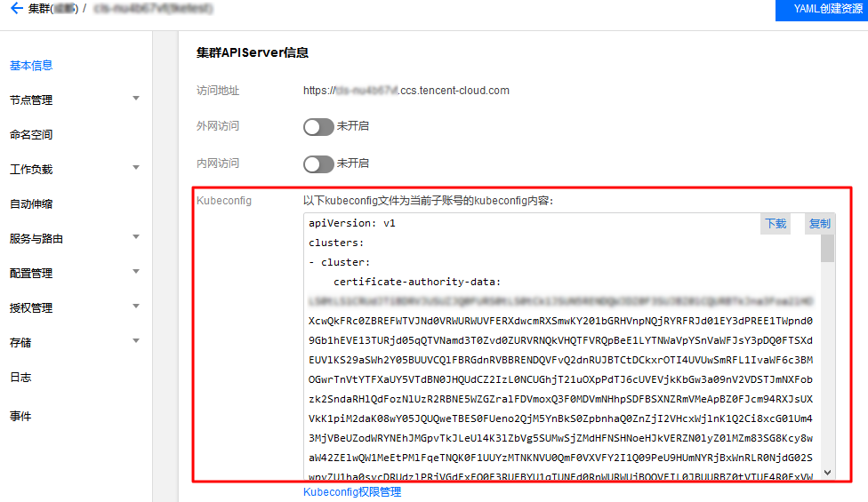
凭证管理
集群管理员可以访问凭证管理页，进行查看并更新所有账号下集群的凭证。详情请参见 更新子账号的 TKE 集群访问凭证。
授权
说明：请联系集群管理员（主账号、集群创建者或拥有 admin role 的用户）进行授权。
- 在“集群管理”页面中，选择目标集群 ID。
- 在集群详情页面中，选择左侧【授权管理】>【ClusterRoleBinding】。
- 在 “ClusterRoleBinding” 管理页面中，单击【RBAC策略生成器】。如下图所示：
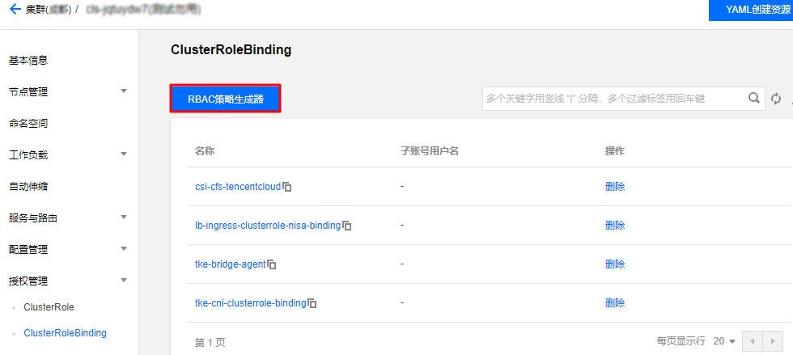
- 在“管理权限”页面的“选择子账号”步骤中，勾选需授权的子账号并单击【下一步】。
- 在“集群RBAC设置”步骤中，按照以下指引进项权限设置：
- Namespace列表：按需指定权限生效的 Namespace 范围。
- 权限：请参考界面中的“权限说明”，按需设置权限。说明：您还可以单击【添加权限】，继续进行权限自定义设置。
鉴权
登录子账号，确认该账号已获得所授权限，则表示授权成功。
自定义策略授权
- Role：命名空间维度
1 | apiVersion: rbac.authorization.k8s.io/v1 |
- ClusterRole：集群维度
1 | apiVersion: rbac.authorization.k8s.io/v1 |
操作步骤
说明：该步骤以为子账号绑定自定义 ClusterRole 为例，与绑定 Role 的步骤基本一致，您可结合实际需求进行操作。
- 登录容器服务控制台，选择左侧导航栏中的【集群】。
- 在“集群管理”页面中，选择需升级的集群 ID。
- 在集群详情页面中，选择左侧【授权管理】>【ClusterRole】。如下图所示：
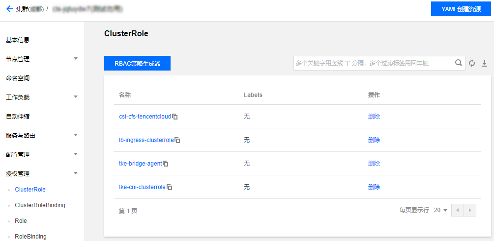
- 在 “ClusterRole” 管理页面中，选择右上角的【YAML创建资源】。
- 在编辑界面输入自定义策略的 YAML 内容，单击【完成】即可创建 ClusterRole。该步骤以 ClusterRole：集群维度 YAML 为例，创建完成后，可在 “ClusterRole” 管理页面中查看自定义权限 “testClusterRole”。
- 在 “ClusterRoleBinding” 管理页面中，单击【RBAC策略生成器】。
- 在“管理权限”页面的“选择子账号”步骤中，勾选需授权的子账号并单击【下一步】。如下图所示：

- 进入“集群RBAC设置”界面，按照以下指引进项权限设置。如下图所示：
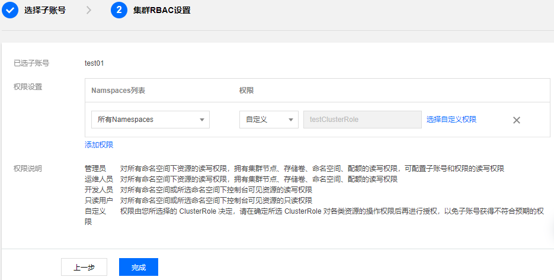
- Namespace列表：按需指定权限生效的 Namespace 范围。
- 权限：选择“自定义”，并单击【选择自定义权限】。按需在自定义权限列表中进行权限选择，本文以选择已创建的自定义权限 “testClusterRole” 为例。说明：
您还可以单击【添加权限】，继续进行权限自定义设置。
- 单击【完成】即可完成授权操作。
更新及获取子账号访问凭证
腾讯云容器服务 TKE 基于 x509 证书认证实现了以下功能：
- 每个子账号均单独具备客户端证书，用于访问 Kubernetes APIServer。
- 在 TKE 新授权模式下，不同子账号在获取集群访问凭证时，即访问集群基本信息页面或调用云 API 接口 DescribeClusterKubeconfig 时，将会获取到子账户独有的 x509 客户端证书，该证书是使用每个集群的自签名 CA 进行签发的。
- 当子账号在控制台访问 Kubernetes 资源时，后台默认使用该子账号的客户端证书去访问用户 Kubernetes APIServer。
- 支持子账号更新独有的客户端证书，防止凭证泄露。
- 支持主账号或使用集群 tke:admin 权限的账号进行查看、更新其他子账号的证书。
操作步骤
- 登录容器服务控制台，选择左侧导航栏中的【集群】。
- 在“集群管理”页面中，选择需目标集群 ID。
- 在集群详情页面中，选择左侧的【基本信息】，在“集群APIServer信息”模块中单击【Kubeconfig权限管理】。
- 在弹出的 “Kubeconfig权限管理” 窗口中，按需勾选认证账号并单击【更新】即可。如下图所示：
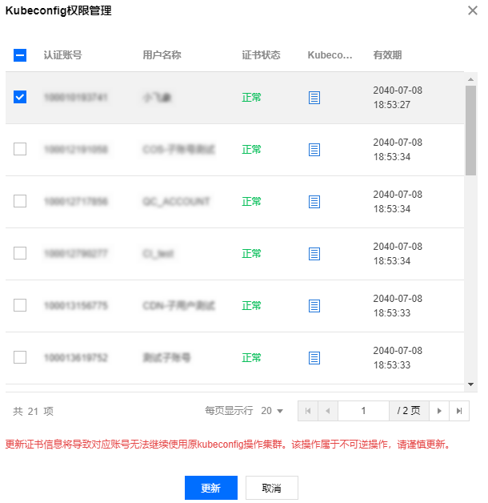
参考文档
https://blog.csdn.net/ywq935/article/details/84840935
https://kubernetes.io/zh/docs/reference/access-authn-authz/rbac/

欢迎访问 Vashon 的博客，博客和文章在完善中，请大家耐心等待。 若有问题或者有好的建议欢迎留言，笔者看到之后会及时回复。

...
...